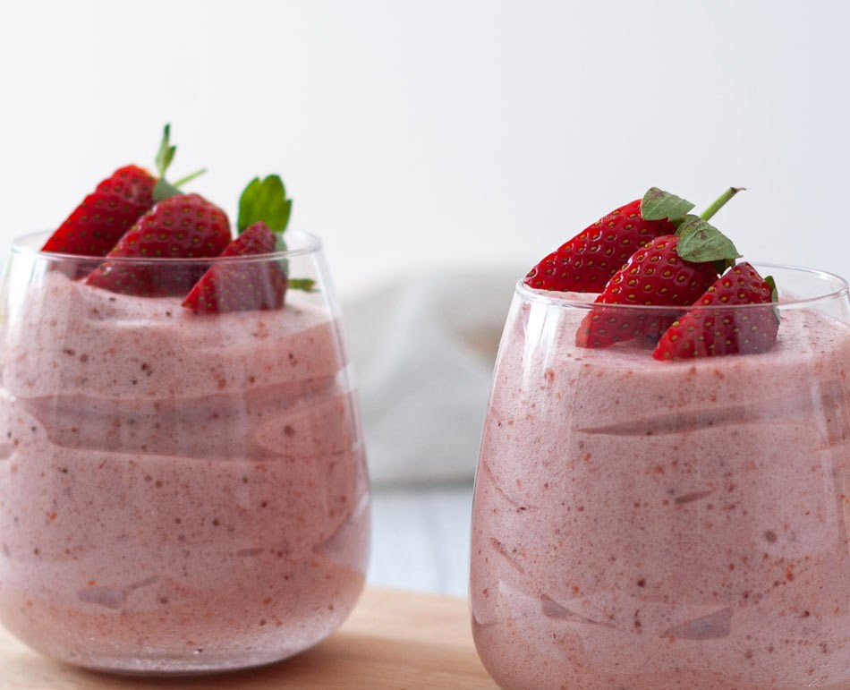
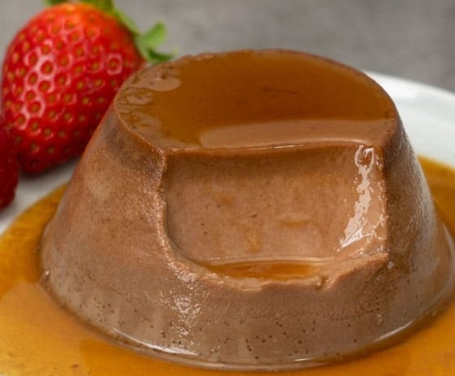

Registrarse
Registrarse
RECETAS APTAS DIABETICOS
Mousse de frutilla
Ingredientes
- 250 ml de leche desnatada
- 2 yemas
- 150 gr de frutillas
- 15 gr de gelatina
- 15 gr de harina de maíz
- 150 gr de nata líquida
- Edulcorante a gusto
Procedimiento
Poner la gelatina en agua durante 10 minutos, antes de comenzar la preparación. Pasar las fresas por la batidora para hacer una especie de puré. Disolver la harina de maíz con 3 cucharadas de leche, después añadiremos las yemas también para que se disuelvan. Poner en una cacerola la leche con la mitad del edulcorante que se piense usar. Cuando empiece a hervir, se agrega lentamente la mezcla de la harina removiendo constantemente. Dejar que vuelva a hervir. Incorporar la gelatina. Retirar del fuego, colar y dejar enfriar. Cuando esté bien frío se incorpora el puré de fresas y la nata batida con el resto del edulcorante. dejarlo en la nevera durante 1 hora y, ¡listo para servir!
Ingredientes
- 100 gr de chocolate 100% puro
- 1 taza de leche desnatada
- 2 huevos
- 1 cucharadita de stevia
Procedimiento
En un cazo ponemos la leche y la calentamos, cuando esté caliente, añadimos el chocolate troceado. Hay que remover constantemente para evitar que se pueda pegar o quemar. Se retira del fuego y se deja enfriar. En una taza mezcla los huevos con la stevia (o el edulcorante escogido), remueve hasta que esté todo mezclado. Mezcla ambos contenidos y cuando estén bien incorporados, los vuelcas sobre la flanera o flaneras. En un recipiente para horno, donde te quepan las flaneras, echas un poco de agua para preparar estos flanes al baño maría. Lo metéis en el horno precalentado a 180º durante unos 30 a 35 minutos (comprobad antes de sacar). Pasado ese tiempo, hay que dejarlos enfriar y después ya podréis desmoldar en el plato.
Flan de chocolate
Cheesecake
Ingredientes
- 5 gr. stevia
- 250 gr. queso crema ligero (bajo en grasa)
- 200 ml crema de leche ligera (bajo en grasa)
- Galletas sin azúcar tipo maría
- 100 ml leche desnatada
- 10 gr gelatina neutr
Procedimiento
Puedes deshacer las galletas y añadirle mantequilla para que quede una base de tarta firme o puedes colocar las galletas enteras. Pon la crema de leche o nata ligera al fuego, cuando esté caliente, añade el queso en crema y remueve constantemente para ayudar a que se deshaga por completo. En un vaso echa la leche y añades la gelatina neutra para que se hidrate. Remueve con una cuchara para que esté completamente disuelto. Cuando estén listos ambos ingredientes, se añade la gelatina disuelta al cazo y se remueve. Añade la stevia y continúa removiendo. En cuanto hierva, echas el contenido sobre el molde donde has preparado la base de la tarta. Dejas enfriar en la nevera, mejor de un día para otro, y listo. Puedes decorarlo con frutas frescas.
Ingredientes
- 125 ml yogur sin azúcar griego o natural
- 45 ml aceite de coco o mantequilla light
- 1 huevo
- 250 g harina de avena integral
- 1 cda sucralosa en polvo o edulcorante al gusto
Procedimiento
En un bol, batimos el yogur con el huevo y el aceite de coco líquido. Añadimos la harina tamizada poco a poco y la sucralosa. Quedará una masa pegajosa que no se puede trabajar. La guardaremos en la nevera por lo menos durante 30min, para que esté consistente. Formamos bolitas con la masa fría y las aplastamos sobre la bandeja del horno, forrada con papel de hornear. Si queremos, podemos añadir cerezas, pepitas de chocolate, pasta de mani o lo que quieras! Con el horno previamente precalentado y calor arriba y abajo, horneamos nuestras galletas durante 15-20min a 180º C, hasta que se doren ligeramente. Dejamos enfriar por completo sobre una rejilla, decoramos con los toques finales, ¡y listo!
Galletas de yogurt